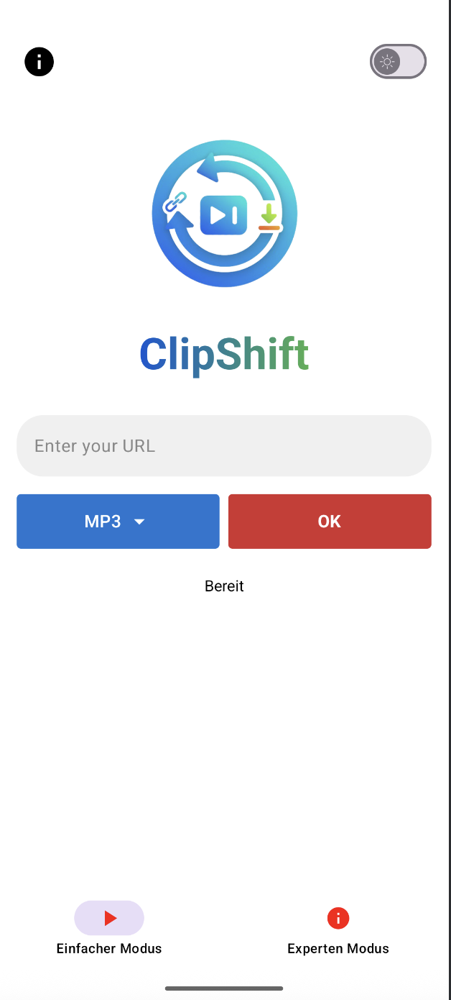
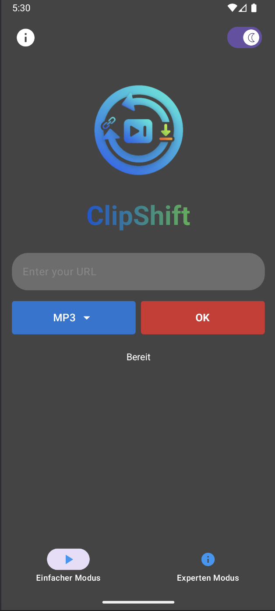
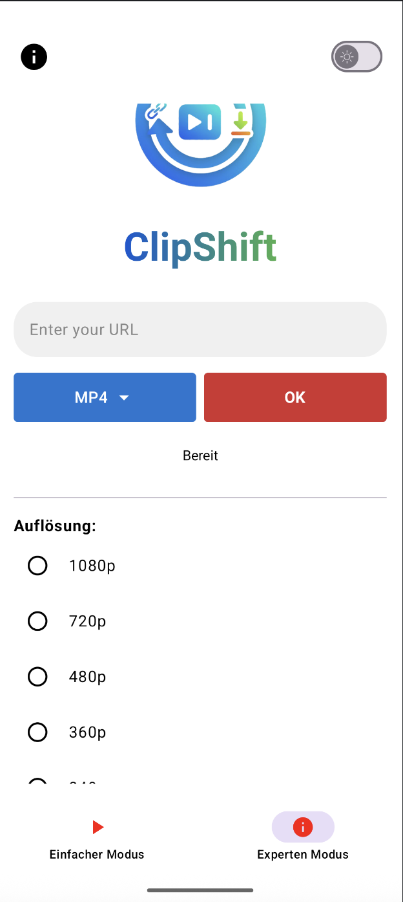

Medien-Konvertierung ohne Kompromisse
Softwareprojekt • 2026
Wieso haben wir uns für eine eigene App entschieden?
Was macht ClipShift anders?
Abstraktion der komplexen CLI-Befehle für den Endnutzer.
Extraktion von Metadaten und Download der Rohdaten von über 1000 Plattformen.
Das "Messer" für Medien: Schneiden, Mergen und Konvertieren der Datenströme.
Ein Interface für zwei Zielgruppen: Einsteiger und Experten.



Genug der Theorie – schauen wir uns die Implementierung live an.
Live-Demo & Fragen